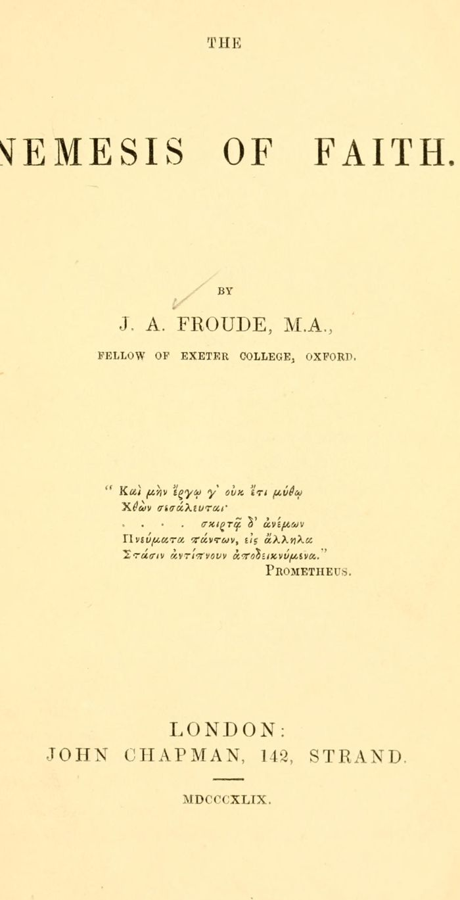
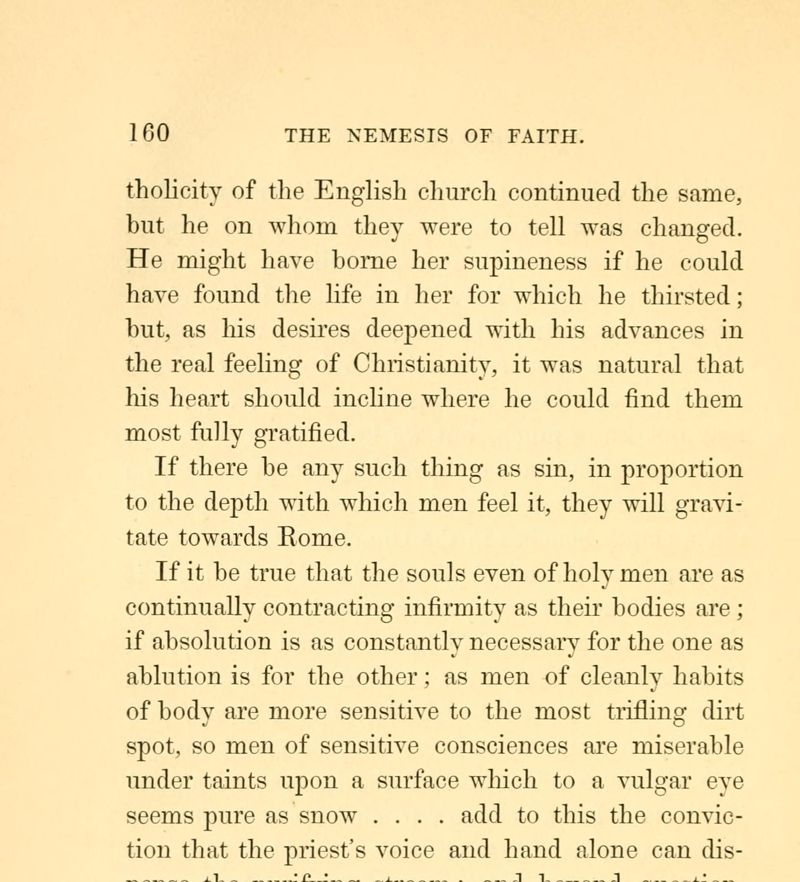

“They will gravitate towards Rome” (pp. 160–161)
English: 1849, pp. 160–161, scan n167–n168. The narrator is writing about Newman. Highlighted: the remarks Lecky points to.

… The arguments for the Catholicity of the English church continued the same, but he on whom they were to tell was changed. He might have borne her supineness if he could have found the life in her for which he thirsted; but, as his desires deepened with his advances in the real feeling of Christianity, it was natural that his heart should incline where he could find them most fully gratified.
If there be any such thing as sin, in proportion to the depth with which men feel it, they will gravitate towards Rome.
If it be true that the souls even of holy men are as continually contracting infirmity as their bodies are; if absolution is as constantly necessary for the one as ablution is for the other; as men of cleanly habits of body are more sensitive to the most trifling dirt spot, so men of sensitive consciences are miserable under taints upon a surface which to a vulgar eye seems pure as snow . . . . add to this the conviction that the priest’s voice and hand alone can dispense the purifying stream; and beyond question, where the fountain runs the fullest, thither they will seek to go.
And sin with Newman was real; not a misfortune to be pitied and allowed for; to be talked of gravely in the pulpit, and forgotten when out of it; not a thing to be sentimentally sighed over at the evening tea-party, with complacent feeling that we were pleasing Heaven by calling ourselves children of hell, but in very truth a dreadful monster, a real child of a real devil, so dreadful that at its first [p. 161] appearance among mankind it had convulsed the infinite universe, and that nothing less than a sacrifice, so tremendous that the mind sinks crushed before the contemplation of it, could restore the deranged balance. … To the dry mathematicizing reason, the Catholic, the Anglo-Catholic, the Lutheran, Calvinist, the Socinian, will be equally unacceptable … But sin is of faith, not of mathematics. And a real human heart, strong enough and deep enough to see it and feel it in its enormity, will surely choose from among the various religions that one where the sacraments are most numerous and most constant, and absolution is more than a name, and confession is possible without episcopal interdictings.
For myself I fell off; not because I had determined not to follow, but because I had not yet felt this intensity of hunger and of thirst which could drive me to accept the alternative …
Lecky (vol. II, ch. V, text at note 121) lists the Tractarians last among those driven by a troubled conscience: the sense of sin “urged the first leaders of Tractarianism towards a Church which by authoritative teaching and multiplied absolutions could allay the paroxysms of a troubled conscience.” Froude’s pages make the same point about Newman, in the voice of a character who turned back.
Further down the rabbit hole
Sources that Lecky cites in the notes next to the ones that cite this page.
- Noodt and Gronovius, Du pouvoir des souverainsTwo Leiden lectures on liberty, in John Adams’s own copy
- Montaigne, EssaisLecky cuts Montaigne short and changes a word
- Cibrario, Della economia politica del medio evoTurin, 1388: a heretic who held that the Devil made Adam and Eve, and that usury was no sin
- Hobbes, Leviathan (Latin version), chapter 29Hobbes says classics teach rebellion in monarchies
- Tallemant des Réaux, HistoriettesCardinal Richelieu goes shopping for a banned book, and pays five pistoles for loose sheets
- Allen, Inquiry into the Rise and Growth of the Royal PrerogativeAn oath of non-resistance that outlived the Revolution by some thirty years


Backlinks
Every place in Rationalism in Europe that links to this page (generated automatically when the site is built).
- Chapter V: note 121